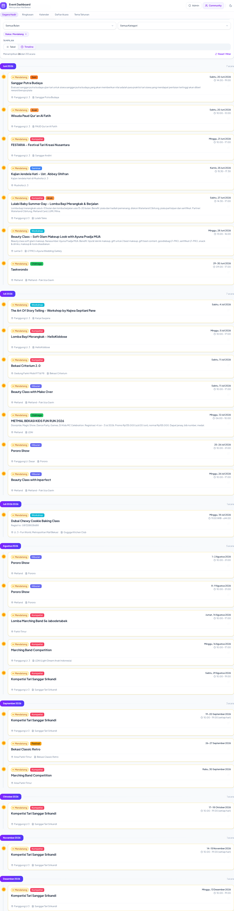
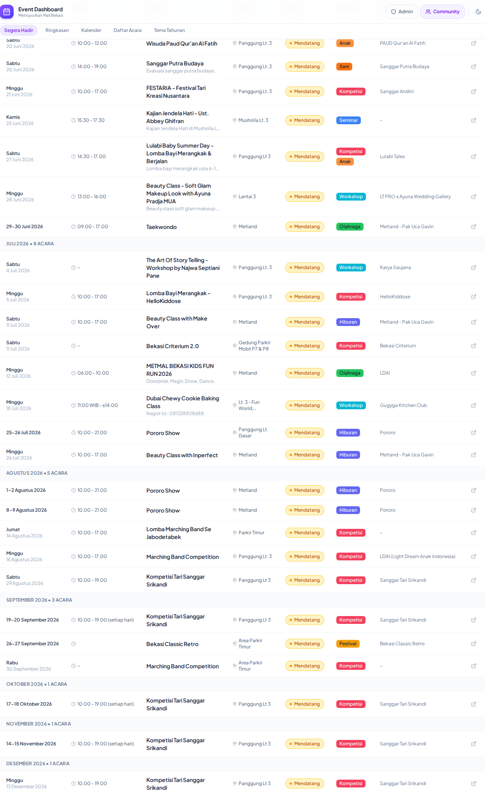
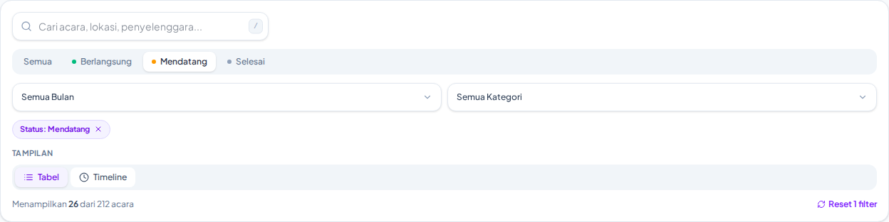

Koordinasi
Satu tempat, bukan banyak
Tim tidak lagi mencari jadwal di satu file, draft di tempat lain, dan survey di spreadsheet terpisah.
Inovasi Marcomm · Metropolitan Mall Bekasi
Sebuah sistem yang mengubah cara tim event mengelola seluruh siklus — dari perencanaan hingga pelaporan — menjadi satu alur yang jelas.
Yang dilihat sehari-hari
Setiap bagian berjalan dengan caranya sendiri: jadwal di satu tempat, draft di tempat lain, survey di spreadsheet terpisah.
“Setiap event terasa seperti dimulai dari nol.”
Pengamatan langsungInisiatif
Alih-alih menunggu, saya mengambil inisiatif untuk membangun sistem yang menghubungkan semua bagian event ke dalam satu dashboard.
Jadwal tersebar · Draft di-review manual · Survey di spreadsheet · Laporan dibuat ulang setiap kali
Satu dashboard · Alur draft terstruktur · Survey tercatat otomatis · Data siap dilaporkan
Fase 1 · Sudah live
Sistem ini bukan proposal di atas kertas. Modul-modul berikut sudah aktif dan bisa digunakan hari ini.
Bukti nyata
Screenshot dari dashboard yang sudah aktif. Ini bukan konsep — ini yang digunakan tim.



Dampak
Tim tidak lagi mencari jadwal di satu file, draft di tempat lain, dan survey di spreadsheet terpisah.
Status event, draft yang perlu review, hasil survey — semua bisa dilihat dari satu titik tanpa bertanya ke banyak orang.
Laporan tidak perlu dibuat ulang dari nol. Data proses sudah tercatat dan bisa langsung digunakan.
Tidak ada angka hasil yang dijanjikan di muka — dampak diukur dari pemakaian nyata.
Momentum
Sistem ini terus berkembang. Setiap iterasi menambah kemampuan berdasarkan kebutuhan operasional yang nyata.
Roadmap menunjukkan komitmen jangka panjang, bukan proyek satu kali.
Langkah berikutnya
Keterlibatan
Sistem ini dibangun untuk melayani kebutuhan operasional. Prioritas berikutnya bisa ditentukan bersama — mana yang paling penting untuk tim.
Prioritaskan penguatan sistem sebelum ekspansi fitur.
Prioritaskan modul baru yang paling dibutuhkan tim operasional.
Jalankan keduanya secara paralel dengan alokasi yang tepat.
Nilai
Proyek ini menunjukkan bahwa inovasi tidak harus menunggu anggaran besar atau tim khusus. Satu inisiatif yang tepat bisa mengubah cara kerja.
Penutup
Sistem ini adalah bukti bahwa perbaikan bisa dimulai dari inisiatif. Saya mengundang arahan untuk menentukan prioritas berikutnya.